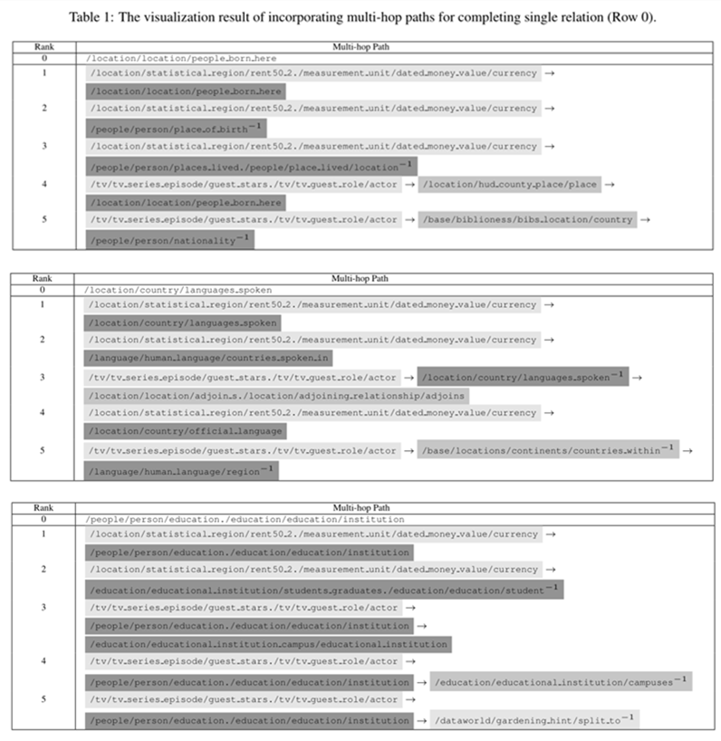

This is an anonymized link for supplemental material of IJCAI submission (Paper ID: 50).
Paper Title: Hierarchical Attention Based Adversarial Neural Networks for Knowledge Base Completion.
In our methods, we design a hierarchical attention mechanism to encourage our model to capture valuable features sharing across single relation and multi-hop paths. Naturally, facts associated with rare relations should benefit most from such sharing, boosting the overall performance. In the section Classification Effect, we conduct multiple experiments on single relations with different frequencies to verify our hypothesis. The overall distribution of relation frequencies resembles that of word frequencies, subject to the Zipf's law and their log frequencies are linear. The statistics of single relations on our three datasets are shown in Figure 1.
In order to show the interpretability of HANs used in our model, we select some examples from FB15K in Table 1. As illustrated in Table 1, the order of the columns indicates the ranking of the weights of path attention (descending order), and the color depth of background in each path indicates the importance of relation attention (the deeper the more important).

In order to explain and analyze the working mechanism of partial modules in our methods, we visualize some components' outputs.
Firstly, we randomly select three different single relations and their corresponding highest frequency multi-hop paths (reducing noise paths) in datasets, and use PCA to reduce the dimensions of their embeddings. By observing the visualization results shown in Figure 2(a), we find that the weighted sum multi-hop path is closer to the real single relation than each single multi-hop path, which indicates that HANs can effectively incorporate the multi-hop paths' semantic information.
Secondly, we compare the feature extractor, which is shared by the source discriminator and the relational classifier in our model, with other feature compression methods. By observing the results shown in Figure 2(b), we can find that the linear dimensionality reduction methods (i.e., PCA, LDA) are close to each other, the nonlinear method LLE is far apart, and the method in our model is the farthest from the traditional dimensionality reduction methods. The main reason for this phenomenon is that the traditional dimension reduction methods aim to retain the original spatial information as much as possible, however, the goal of the module in our model is to capture information which is valuable for relation classification and source indiscriminate.